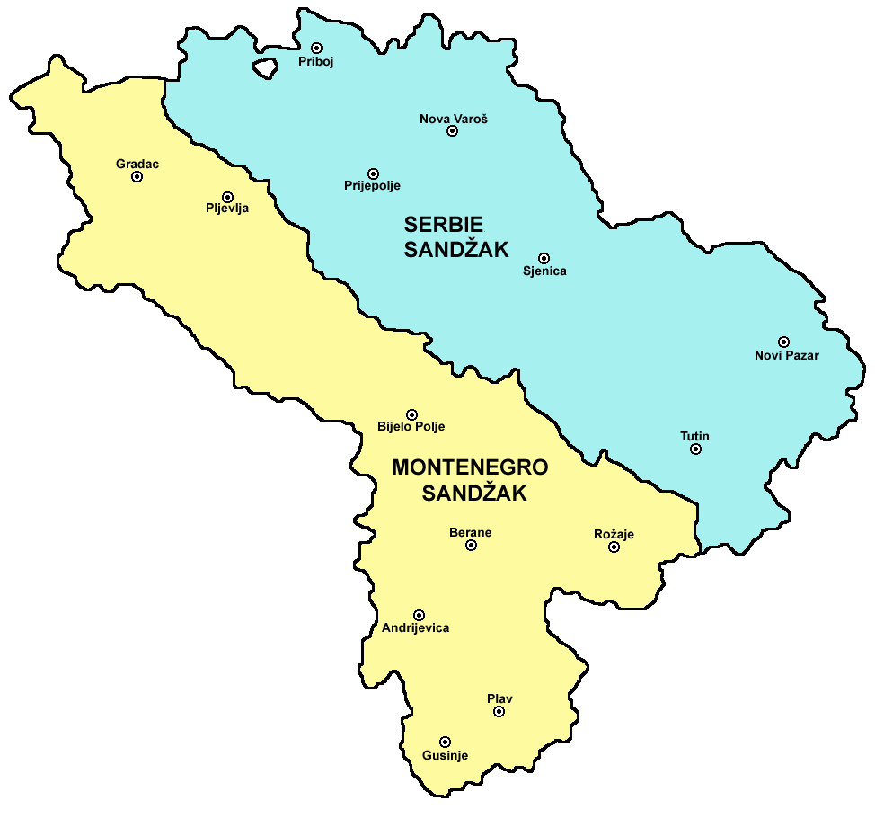

Stevan St. Mokranjac : Sedma Rukovet
Stevan St. Mokranjac: Septième Guirlande
"ÐеÑме из СÑаÑе СÑбиÑе и ÐакедониÑе - Chants de Vieille Serbie et de Macédoine"

СанÑак
Sandjak
|
|
|
|
Ðезе ка пеÑмама 1 - 5 -oOo- Liens vers les chants 1 - 5

7a Ð ÑковеÑ
Ðзводи Ð¥Ð¾Ñ Ð Ð¢Ð-а ÐеогÑад. ÐиÑигенÑ: Ðладен ÐагÑÑÑ (маÑоÑ)
Ð¥Ð¾Ñ Ð Ð°Ð´Ð¸Ð¾-ÑелевизиÑе ÐеогÑад Ñед. Ðладен ÐагÑÑÑ (1. маÑ)
NOTE
|
Ðд 2. Ð ÑковеÑи било Ñе ÑаÑно да Ñе ÐокÑаÑÐ°Ñ Ð¸Ð¼Ð°Ð¾ за ÑÐ¸Ñ Ð´Ð° Ñвим ÑвоÑим композиÑиÑама ÑнеÑе ÑÑилÑко ÑединÑÑво. Ðд 7. Ð ÑковеÑи Ð¾Ð²Ð°Ñ Ð¿ÑинÑип поÑÑаÑе пÑавило: Ðве бÑзе пеÑме âÐоÑе, Ð¸Ð·Ð²Ð¾Ñ Ð²Ð¾Ð´Ð° извиÑалаâ и âÐÑде, ко Ñи кÑпи кÑланÑеÑоâ пÑаÑи âШÑо ли ми Ñеâ, ÑеноÑÑка аÑиÑа Ñз пÑаÑÑÑ Ð¼ÑÑког Ñ Ð¾Ñа. ЧеÑвÑÑо и пеÑо певаÑе ÑÑ Ð¾Ð¿ÐµÑ Ð±Ñзе: Ñо ÑÑ ÑкеÑÑо âÐоÑеÑа дедоâ и коло âÐаÑÐ°Ñ Ðанкеâ, ÑиÑа мÑзика подÑеÑа на гаÑде. Izvor: Ðикипедиjа [*] CÑapa СÑбиÑа ÐÐ²Ð°Ñ ÑеÑмин Ñе до 1922. ознаÑавао СанÑак (делови западне СÑбиÑе и ЦÑне ÐоÑе), СевеÑÐ½Ñ ÐакедониÑÑ Ð¸ ÐоÑово). ÐÐ°Ð½Ð°Ñ Ñе Ñиноним за "СанÑак" и ÑединÑÑвено Ñе одноÑи на ÐаÑдаÑÑÐºÑ Ð¸ ÐеÑÑÐºÑ Ð±Ð°Ð½Ð¾Ð²Ð¸Ð½Ñ (види каÑÑÑ). Ðно ÑÑо Ñе ÑигÑÑно ÑеÑÑе да Ñезик ове 4 пеÑме ниÑе ÑиÑÑ ÑÑпÑки и да Ñе 2. пеÑма на македонÑком. ÐиÑам наÑао модеÑне инÑеÑпÑеÑаÑиÑе Ð¾Ð²Ð¸Ñ Ð½Ð°Ð¿ÐµÐ²Ð°. |
Dès la 2ème Rukovet, il était clair que Mokranjac visait à conférer une unité stylistique à l'ensemble de ses compositions. A partir de la 7e Rukovet ce principe devient une règle: Deux chants rapides "More, izvor voda izvirala" et "Ajde, ko ti kupi kulanÄeto" sont suivis de "Å to li mi je", un air lent de ténor accompagné d'un chÅur d'hommes. Les quatrième et cinquième chants sont à nouveau rapides: Il s'agit du scherzo "Poseja dedo" et du kolo "Varaj Danke", dont la musique rappelle un air de "gajde" (cornemuse). (Source: Wikipedia) [*] Vieille Serbie Ce terme a désigné jusqu'en 1922 le Sandjak (parties de la Serbie occidentale et du Monténégro), la Macédoine-du-Nord et le Kosovo). Aujourd'hui il est synonyme de "Sandjak" et s'applique uniquement aux banovines du Vardar et de la Zeta (cf. carte). Ce qui est certain c'est que la langue de ces 4 chants n'est pas du pur serbe et qu'elle tend vers le macédonien. Je n'ai pas trouvé d'interprétations modernes de ces chants. |